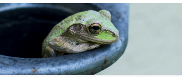

<html lang="zh-hant"></html>
  <head>
    <meta charset="UTF-8" />
    <meta http-equiv="X-UA-Compatible" content="IE=edge" />
    <meta name="viewport" content="width=device-width, initial-scale=1.0" />
    <title>蛙化現象</title>
  </head>
  <link rel="stylesheet" href="https://fonts.googleapis.com/css2?family=Material+Symbols+Outlined:opsz,wght,FILL,GRAD@20,400,0,0" />
  <link rel="stylesheet" href="https://cdn.jsdelivr.net/npm/swiper@11/swiper-bundle.min.css" />
  <body style="width: 375px; padding-top: 54px; padding-bottom: 75px;">
    <%- include('./layout/header-tertiary-plain'); -%> 
    <section class="article-frog-banner position-relative">
      
      <div class="img-top-btn p-s d-flex gap-xs justify-content-between position-absolute top-0" style="width: 375px;">
        <a class="icon-btn-bg back-button" href="index.html" title="回上頁">
          <span class="material-symbols-outlined icon-btn" >arrow_back_ios_new</span>
        </a>
        <div class="btn-right">
          <a class="icon-btn-bg" href="#" title="加入最愛">
            <span class="material-symbols-outlined icon-btn">favorite</span>
          </a>
          <a class="icon-btn-bg" href="#" title="分享">
            <span class="material-symbols-outlined icon-btn">share</span>
          </a>
        </div>
      </div>
    </section>
    <div class="container">
      <section class="article-header my-m d-flex justify-content-between align-items-center">
        <div class="d-flex gap-xs">
          <h1 class="fs-h3 fw-700 text-gray-900 mb-0">蛙化現象</h1>
          <a class="tag tag-primary" href="#">生活</a>
        </div>
        <a class="article-translate btn btn-primary" href="article-frog-jp.html">中翻日</a>
      </section>
      <section class="article-body">
        <p class="fs-t5 text-gray-400 mb-0 frog-content" style="line-height: 22px;">「蛙化現象」一開始由心理學家藤澤伸介提出，從童話《青蛙王子》衍生而來，指的是當女生得知喜歡的人也喜歡自己後，就變得不喜歡對方了，這樣的現象可能來自女性的自卑感，「他怎麼會喜歡這麼普通的我？」，而對對方感到幻滅，又或者女生只是享受著單戀的過程，喜歡保持距離的曖昧戀愛感，但並不想實際和對方談戀愛。<br>
        但根據日本媒體《TBS NEWS DIG》街訪調查， 「蛙化現象」一詞在年輕人間有了新的解釋，指的是「喜歡的男生讓人感到幻滅的行為」，即使女生原本對該男性抱持好感，也可能因某些生活小細節，戀愛感就突然冷卻，眼中的王子突然變成青蛙。</p>
      </section>
      <section class="artcle-footer">
        <ul class="list-unstyled my-m d-flex gap-s">
          <li>
            <a class="fs-t5 text-gray-400 mb-0 " href="#" title="comment"><span class="material-symbols-outlined fs-t5 text-primary align-middle me-tiny">chat</span>32</a>
          </li>
          <li>
            <a class="fs-t5 text-gray-400 mb-0 " href="#" title="加入最愛"><span class="material-symbols-outlined fs-t5 text-primary align-middle me-tiny">favorite</span>195</a>
          </li>
          <li>
            <a class="fs-t5 text-gray-400 mb-0 " href="#" title="分享"><span class="material-symbols-outlined fs-t5 text-primary align-middle me-tiny">share</span>195</a>
          </li>
        </ul>
        <hr/>
      </section>
    </div>
    <div class="container">
      <ul class="message-list list-unstyled d-flex flex-column gap-m">
        <!-- 留言一 -->
        <li>
          <section class="message-list-message-header d-flex justify-content-between align-items-center">
            <div class="d-flex gap-xs align-items-center">
              <div class="message-headshot position-relative">
                
                
              </div>
              <h4 class="fs-h4 fw-700 text-gray-900 mb-0">Elly</h4>
              <a href="#" class="tag tag-gray">留學生</a>
              <a href="#" class="tag tag-gray">INFP</a>
            </div>
            <a href="#" class="d-inline-flex align-items-center fs-t8 text-gray-400">
              <span class="material-symbols-outlined me-tiny" style="line-height: 16px; height: auto; width: auto;">favorite</span>
              <span>195</span>
            </a>
          </section>
          <section class="message-body p-m ms-auto bg-gray-50 rounded-top-end-3 rounded-bottom-3" style="width: 304px;">
            <p class="fs-t6 mb-0" style="line-height: 20px;">我記得我有個暗戀的學長他就是這樣，後來直接人間清醒🥲</p>
          </section>
        </li>
        <!-- 留言二 -->
        <li>
          <section class="message-list-message-header d-flex justify-content-between align-items-center">
            <div class="d-flex gap-xs align-items-center">
              <div class="message-headshot position-relative">
                
                
              </div>
              <h4 class="fs-h4 fw-700 text-gray-900 mb-0">John</h4>
              <a href="#" class="tag tag-gray">上班族</a>
              <a href="#" class="tag tag-gray">ENTJ</a>
            </div>
            <a href="#" class="d-inline-flex align-items-center fs-t8 text-gray-400">
              <span class="material-symbols-outlined me-tiny" style="line-height: 16px; height: auto; width: auto;">favorite</span>
              <span>195</span>
            </a>
          </section>
          <section class="message-body p-m ms-auto bg-gray-50 rounded-top-end-3 rounded-bottom-3" style="width: 304px;">
            <p class="fs-t6 mb-0" style="line-height: 20px;">我有一次跌倒的時候用搞笑的方式帶過，但沒想到我的曖昧對象居然從那次之後就沒有再跟我聯絡了...蛙蛙竟是我自己</p>
          </section>
        </li>
        <!-- 留言三 -->
        <li>
          <section class="message-list-message-header d-flex justify-content-between align-items-center">
            <div class="d-flex gap-xs align-items-center">
              <div class="message-headshot position-relative">
                
                
              </div>
              <h4 class="fs-h4 fw-700 text-gray-900 mb-0">Elly</h4>
              <a href="#" class="tag tag-gray">全職媽咪</a>
              <a href="#" class="tag tag-gray">ISTJ</a>
            </div>
            <a href="#" class="d-inline-flex align-items-center fs-t8 text-gray-400">
              <span class="material-symbols-outlined me-tiny" style="line-height: 16px; height: auto; width: auto;">favorite</span>
              <span>195</span>
            </a>
          </section>
          <section class="message-body p-m ms-auto bg-gray-50 rounded-top-end-3 rounded-bottom-3" style="width: 304px;">
            <p class="fs-t6 mb-0" style="line-height: 20px;">哈！！我老公就是用跌倒搞笑這招追到我的🤣</p>
          </section>
        </li>
      </ul>
    </div>

    <%- include('./layout/footer-tertiary-input-tw'); -%>

    <script type="module" src="../main.js"></script>
    <script src="https://cdn.jsdelivr.net/npm/swiper@11/swiper-bundle.min.js"></script>
  </body>
</html>